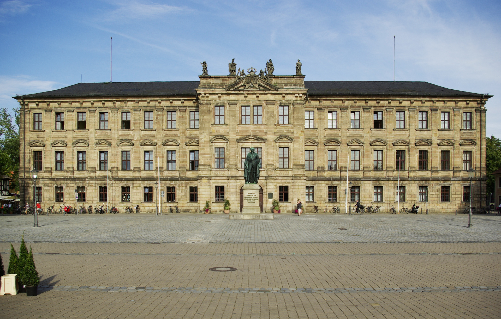
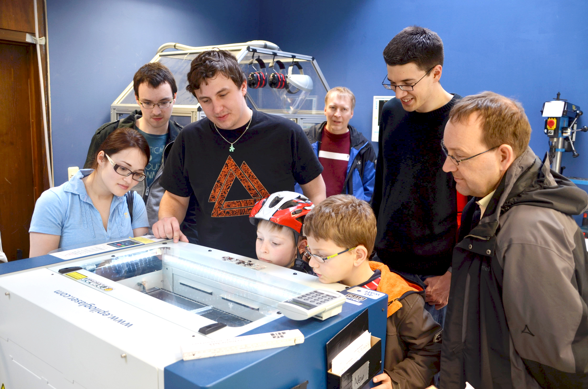
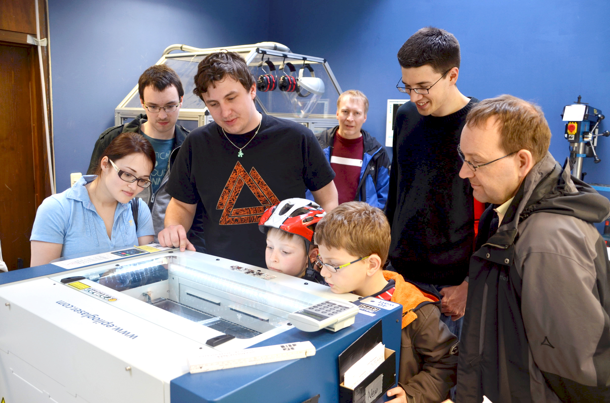

- Initial financing by uni
- Very small room (50m²)
- "DIY" lecture
Since 5 years
CNC Machines for Metal
Electro Workzone
- Electrical engineering students
- Chemical etching for circuit boards
OpenLabs
are open for everyone

Since 5 years
are open for everyone
